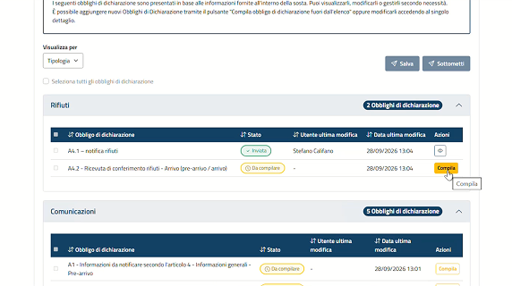
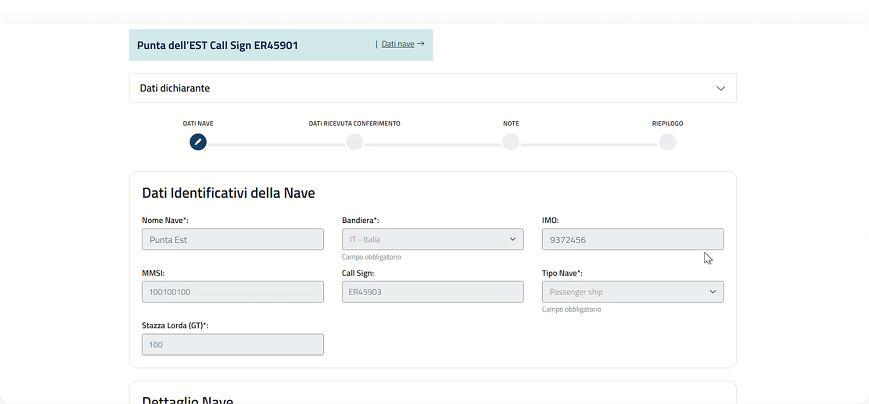
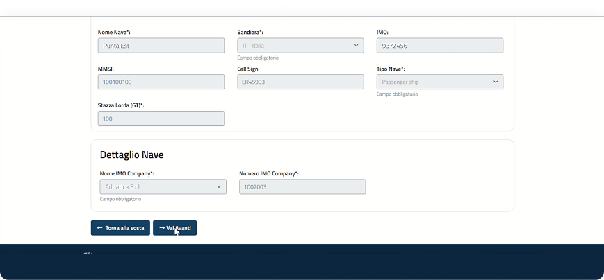
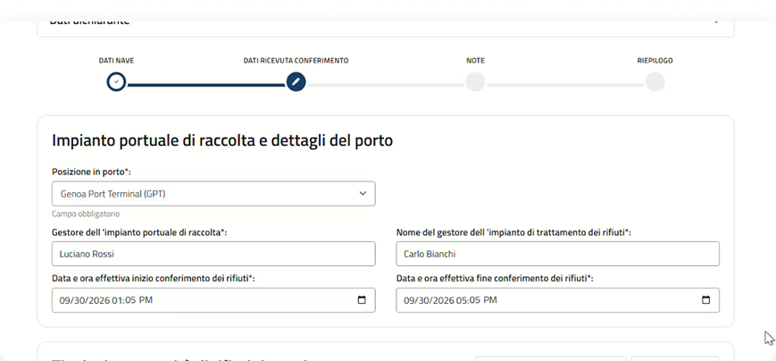
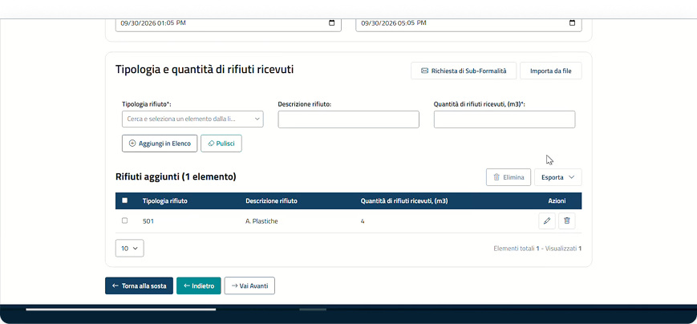
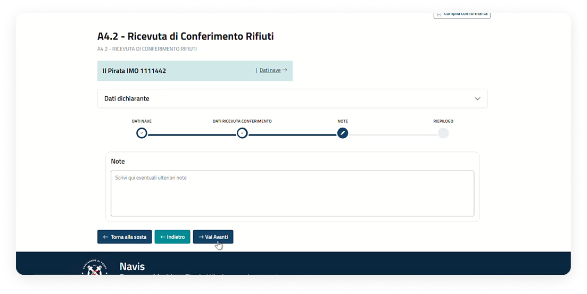
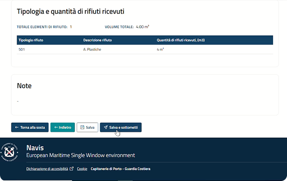
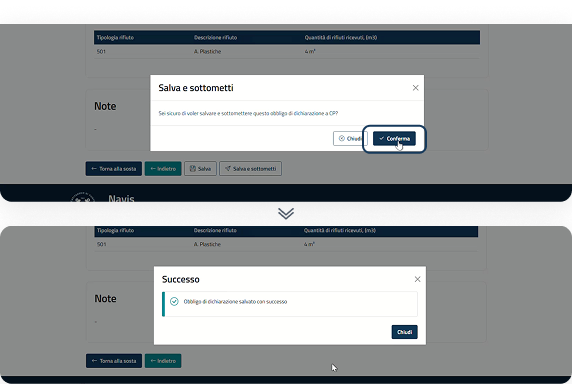
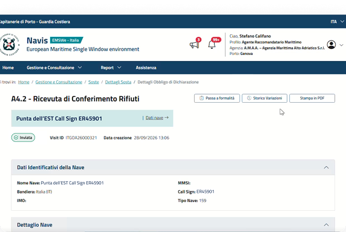

9.2 | Obblighi di Dichiarazione
Compilazione A4.2 - Ricevuta di conferimento rifiuti
Emessa durante la sosta dopo conferimento rifiuti all'impianto portuale. Può essere inviata anche dopo la partenza (ATD + 24h).
- Fase: Partenza
- Categoria A
- Dir. (UE) 2019/883 - MARPOL
- Multi Istanza: Sì
- Workflow: Presa Visione
- Imposta di bollo: No
01.
Passaggi per compilare l'Obbligo di Dichiarazione A4.2
Per poter compilare l'Obbligo di Dichiarazione A4.2, seguire i passaggi di seguito descritti.
Ricerca sosta
Ricercare la sosta tramite una delle modalità presenti a sistema: home page e nella voce di menu "gestione e consultazione" nella sezione gestione soste. In home page nella sezione "Ricerca sosta" inserire il nome nave e cliccare il pulsante con l'icona della lente per avviare la ricerca delle soste.

Dettaglio sosta
I risultati verranno mostrati in tabella. Cliccare l'icona dell'occhio per entrare nel dettaglio della sosta.

Compilazione Obbligo di Dichiarazione
All'interno del dettaglio della sosta è visualizzato l'elenco degli obblighi di dichiarazione. Per compilare l'Obbligo di Dichiarazione A4.2 - Ricevuta di conferimento rifiuti, cliccare "Compila" per proseguire.

L'utente avrà la possibilità di compilare solamente gli Obblighi di Dichiarazione con stato "Da compilare".
02.
Step di compilazione dell'Obbligo di Dichiarazione A4.2
Per compilare l'Obbligo di Dichiarazione, procedere seguendo i passaggi sottostanti.
Compilazione A4.2 - Ricevuta di conferimento rifiuti
Dati nave
-
Dati nave (in corso)
-
Dati ricevuta conferimento (da completare)
-
Note a supporto (da completare)
-
Riepilogo (da completare)
Visualizzazione dati nave
I dati identificativi della nave e del dettaglio sono pre-popolati in base alla nave della sosta selezionata e non sono modificabili.

Step successivo
Per proseguire allo step successivo, cliccare il pulsante "Vai Avanti".

L'utente può modificare i dati della nave entrando in visualizzazione dal link "Dati nave →".
Compilazione A4.2 - Ricevuta di conferimento rifiuti
Dati ricevuta conferimento
-
Dati nave (completato)
-
Dati ricevuta conferimento (in corso)
-
Note a supporto (da completare)
-
Riepilogo (da completare)
Inserimento dati impianto portuale di raccolta e dettagli del porto
Inserire la posizione in porto, il gestore dell'impianto portuale di raccolta, nome del gestore dell'impianto di trattenuta dei rifiuti, data e ora effettiva dell'inizio e della fine del conferimento dei rifiuti.

Possibile inserimento e modifica dei rifiuti e step successivo
All'interno della sezione "Tipologia e quantità di rifiuti ricevuti" sono presenti i rifiuti eventualmente aggiunti in fase di compilazione dell'Obbligo di dichiarazione "A4.1 - Notifica rifiuti". L'utente ha comunque la possibilità di inserire una nuova tipologia di rifiuto e modificare o eliminare tramite gli appositi pulsanti i rifiuti presenti. Per proseguire allo step successivo cliccare "Vai avanti".

Compilazione A4.2 - Ricevuta di conferimento rifiuti
Note a supporto
-
Dati nave (completato)
-
Dati ricevuta conferimento (completato)
-
Note a supporto (in corso)
-
Riepilogo (da completare)
Inserimento note a supporto
Prima di salvare la compilazione dell'obbligo di dichiarazione, l'utente può aggiungere eventuali note a supporto. Questo passaggio è facoltativo; per proseguire, è sufficiente cliccare sul pulsante "Vai avanti".

Compilazione A4.2 - Ricevuta di conferimento rifiuti
Riepilogo
-
Dati nave (completato)
-
Dati ricevuta conferimento (completato)
-
Note a supporto (completato)
-
Riepilogo (in corso)
Riepilogo e salvataggio
Nell'ultimo passaggio di riepilogo è possibile consultare tutte le informazioni inserite negli step precedenti e procedere con il salvataggio o con il salvataggio e il contestuale invio all'autorità marittima tramite i pulsanti "Salva" o "Salva e sottometti".

Finestre di conferma e successo
Il sistema mostra una finestra di conferma; cliccando "Conferma" verrà notificato il successo del salvataggio.

Azioni disponibili
Dopo aver salvato, l'Obbligo di Dichiarazione assumerà lo stato "Creata". Nel caso in cui si sia proceduto con il salva e sottometti l'Obbligo di dichiarazione assumerà lo stato "Inviata".
